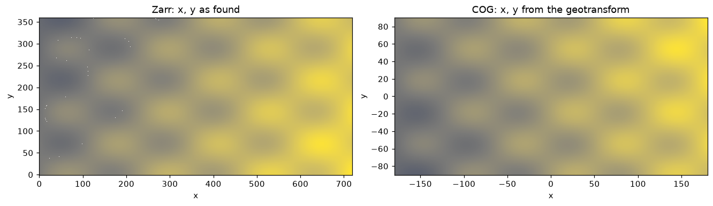

cases = {
"world-int16-spatial.zarr": ("zarr/world-int16-spatial.zarr", "data",
"spatial: + proj: on the group"),
"polar-f32-cf.zarr": ("zarr/polar-f32-cf.zarr", "data",
"CF 1D x/y centres, proj:code only"),
"utm-u16-3band-node.zarr": ("zarr/utm-u16-3band-node.zarr", "data",
"spatial: + proj: on the array, node registration"),
"oisst-like.zarr": ("cf/oisst-like.zarr", "sst", "CF lat/lon, as xarray writes it"),
"rotated.zarr": ("index/rotated.zarr", "tas", "CF rotated pole + 2D lon/lat"),
}
truth = {c["store"]: c for c in fixture_json("zarr/manifest.json")["cases"]}Georeferencing conventions
Which Zarr georeferencing conventions this GDAL recognises, in each open mode, measured at build time.
A Zarr store can say where its cells are in several ways: CF-style 1D x/y coordinate arrays with a CRS code, the newer spatial: and proj: attribute conventions (on the group or on the array), or 2D longitude/latitude arrays. Support for each in GDAL is moving quickly, so this page measures it rather than describing it: the table below is computed from the fixtures every time the site is built.
The fixtures
The three zarr/ stores hold the same pixels as COG fixtures, so their true geotransform and EPSG code are known from the manifest.
What GDAL and gdalxarray see
def classic(rel, arr):
ds = gdal.Open(f'ZARR:"{fixture(rel)}":/{arr}' + (":0" * (len(
gdal.OpenEx(fixture(rel), gdal.OF_MULTIDIM_RASTER).GetRootGroup()
.OpenMDArray(arr).GetDimensions()) - 2)))
gt = ds.GetGeoTransform(can_return_null=True)
srs = ds.GetSpatialRef()
return gt, (srs.GetAuthorityCode(None) if srs else None)
def multidim(rel, arr):
a = gdal.OpenEx(fixture(rel), gdal.OF_MULTIDIM_RASTER).GetRootGroup().OpenMDArray(arr)
srs = a.GetSpatialRef()
return srs.GetAuthorityCode(None) if srs else None
rows = []
for name, (rel, arr, how) in cases.items():
gt, epsg_c = classic(rel, arr)
epsg_m = multidim(rel, arr)
t = truth.get(name)
if t is None or gt is None:
off = ""
else: # origin offset from the truth, in cells
dx = (gt[0] - t["geotransform"][0]) / t["geotransform"][1]
dy = (gt[3] - t["geotransform"][3]) / t["geotransform"][5]
off = "exact" if np.allclose(gt, t["geotransform"]) else f"{dx:+.2f}, {dy:+.2f} cells"
xds = xr.open_dataset(fixture(rel), engine="gdalxarray")
xdims = [d for d in xds[arr].dims if d not in ("band", "time", "zlev")]
real = all(not np.issubdtype(xds[d].dtype, np.integer) for d in xdims if d in xds.coords)
rows.append({
"store": name, "georeferenced by": how,
"classic: geotransform": "yes" if gt else "no",
"classic: vs truth": off,
"classic: EPSG": epsg_c or "",
"multidim: EPSG": epsg_m or "",
"gdalxarray multidim: real x/y coords": "yes" if real else "no (index)",
})
pd.DataFrame(rows).style.hide(axis="index")| store | georeferenced by | classic: geotransform | classic: vs truth | classic: EPSG | multidim: EPSG | gdalxarray multidim: real x/y coords |
|---|---|---|---|---|---|---|
| world-int16-spatial.zarr | spatial: + proj: on the group | no | no (index) | |||
| polar-f32-cf.zarr | CF 1D x/y centres, proj:code only | yes | exact | yes | ||
| utm-u16-3band-node.zarr | spatial: + proj: on the array, node registration | yes | +0.50, +0.50 cells | 32755 | 32755 | no (index) |
| oisst-like.zarr | CF lat/lon, as xarray writes it | yes | yes | |||
| rotated.zarr | CF rotated pole + 2D lon/lat | yes | yes |
Measured with GDAL 3.13.3 and gdalxarray 0.5.1.
A “no” here is a statement about this build, not a verdict: re-render with a newer GDAL and the table changes with it. “vs truth” compares the classic geotransform with the COG the store was made from; an offset of half a cell is the signature of a registration (cell centre versus cell corner) being read the other way round.
What the difference looks like
When the convention is not recognised, the array still opens, with integer index coordinates instead of map coordinates. Side by side, the store whose georeferencing lives in group-level spatial: attributes, and the matching COG:
z = xr.open_dataset(fixture("zarr/world-int16-spatial.zarr"), engine="gdalxarray")["data"]
c = xr.open_dataset(fixture("cog/world-int16-deflate.tif"), engine="gdalxarray",
multidim=False)["band_data"].isel(band=0)
fig, axs = plt.subplots(1, 2, figsize=(12, 3.4), layout="constrained")
z.plot(ax=axs[0], cmap="cividis", add_colorbar=False); axs[0].set_title("Zarr: x, y as found")
c.plot(ax=axs[1], cmap="cividis", add_colorbar=False); axs[1].set_title("COG: x, y from the geotransform")
plt.show()
The attributes are all there, so the georeferencing can be applied by hand until the reader catches up:
attrs = xr.open_dataset(fixture("zarr/world-int16-spatial.zarr"), engine="gdalxarray").attrs
{k: v for k, v in attrs.items() if k.startswith(("spatial:", "proj:"))}{'proj:code': 'EPSG:4326',
'spatial:registration': 'pixel',
'spatial:shape': (360, 720),
'spatial:transform': (0.5, 0.0, -180.0, 0.0, -0.5, 90.0)}a, b, x0, d, e, y0 = attrs["spatial:transform"]
ny, nx = z.shape
fixed = z.assign_coords(x=x0 + a * (np.arange(nx) + 0.5), y=y0 + e * (np.arange(ny) + 0.5))
assert np.allclose(fixed.x.values, c.x.values) and np.allclose(fixed.y.values, c.y.values)
fixed.x.values[[0, -1]], fixed.y.values[[0, -1]](array([-179.75, 179.75]), array([ 89.75, -89.75]))